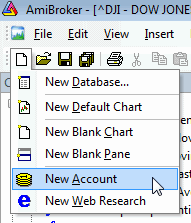
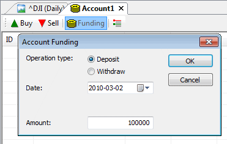
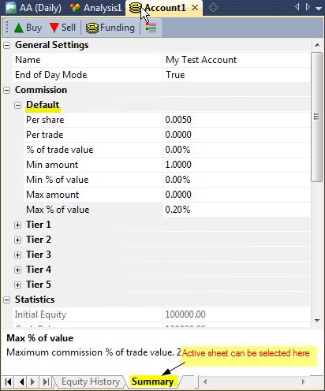
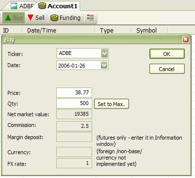
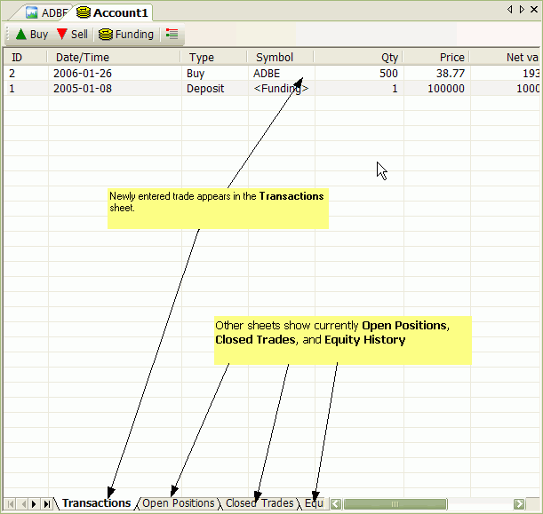

Account Manager is a tool for keeping track of your trades and your performance. You are able to enter trades you make, deposit/withdraw funds, check the statistics and historical performance. All transactions are recorded so you will never forget what happened in the past. Account Manager allows you to keep track of an unlimited number of accounts.
The new Account Manager replaces and enhances functionality provided by Portfolio Manager in pre-4.90 versions.
Use File->New->Account menu to create a new account

Before you do any trading, you have to fund your account. To do so, press "FUNDING" button
on the Account Manager toolbar, then select "Deposit" as operation
type, enter the DATE when you funded your account, and enter the amount.
Note that funding date must PRECEDE any trading, as the Account Manager won't allow
you to trade prior to funding date. Initial deposit will show as "initial
equity" in the Summary tab.

It is a good idea to go to "Summary tab" and set up commissions and trading mode. If this account is used for End-of-day trading, you should set "EOD Mode" to YES, otherwise (if you trade intraday), you should set "EOD Mode" to NO. Depending on this setting, Buy/Sell dialogs will allow you to enter date and time of the trade or only date.

The commission table allows you to enter both per-share (per-contract) commissions and commissions that are expressed as a percent of trade value, or a combination of both. You can also set minimums and maximums expressed in dollar amount and/or percent of trade value. For example, if your broker may use $0.01 (one cent) per share commission, then you would use PerShare = 0.01 and %OfTradeValue = 0. If your broker uses, say, 0.2% of trade value, then you would use PerShare = 0 and %OfTradeValue = 0.2.
Practical example: Interactive Brokers default commission for U.S. stocks is: 0.005 per share but not less than $1 and not more than 0.2% of trade value. Appropriate settings for such a schedule are shown in the screenshot above.
The commission table works as follows: First, the sum of per-share commission and percentage of trade value is calculated. Then the result is checked against minimum and maximum limits. If the calculated value exceeds the limit, then commission is set to such a limit; otherwise, the calculated value is used without change.
The Summary page contains some basic statistics as well.
Once you have funded an account, you can enter trades. To buy (enter long position or cover short position), click the "BUY" button.

Then, in the Buy dialog, you need to select the symbol and the trade date/time. Once they are entered, AmiBroker will display the price of the given symbol at the selected date/time (or preceding one if no exact match is found). It will also calculate maximum possible quantity, taking the price and available funds into account.
You can change the price and quantity manually.
All other values (net market value, commission, market deposit, currency, FX rate) are calculated or retrieved automatically from the Symbol->Information page. Once the values are correct, click OK to confirm the transaction. If you made a mistake, you can press UNDO (Edit->Undo) to revert the last transaction.
A similar procedure is used for selling (entering short positions or closing longs) with the exception that you must press the "SELL" button instead.
All transactions that you have made are listed in the "Transactions" sheet. All open positions are listed in the "Open Positions" sheet. If you enter the trade for a symbol that has a position already open, AmiBroker will adjust "Open Positions" accordingly (perform scaling in/out). Once an open position is closed, it is removed from the "Open Positions" list and moved to the "Closed Trades" sheet.

After each transaction, the "Equity History" sheet is updated with the current account equity value, and the "Summary" page is also updated with basic open/long/short trade stats. (More stats are to come.)
You have to remember that you must enter all transactions in a chronological manner (oldest first, newest last), as the Account Manager won't allow you to add trades out-of-order. If you make a mistake, there is one-level undo that you can use to revert to the state before the last transaction. If you made more mistakes, the only option is to close the account without saving and re-open the original file.
To save edits made to an account, use File->Save (or File->Save As to save under a new name). Note that account files are NOT currently encrypted, and it is quite easy to read the file for everyone who has access to it. So make sure not to leave your files on a public computer. Password protection/encryption is planned but NOT implemented yet.
To open an account file, go to File->Open; in the File dialog, select "Account (*.acx)" from "Files of type" combo box, and select the account file you want to load.
You can create/open multiple accounts at once (just use File->New->Account, File->Open many times).